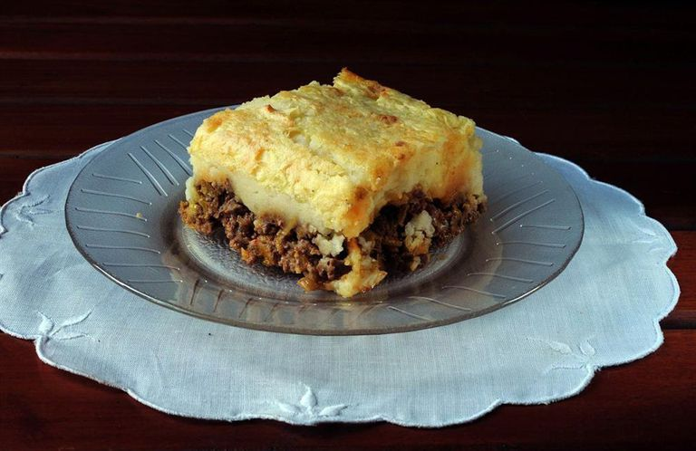

Receta de pastel de papa

Descripción:
El pastel de papa es un plato muy popular de Argentina, aunque dificilmente servido en restaurantes.
Usualmente se lo prepara con puré (puede ser instantáneo, o casero) y lleva una mezcla de carne picada y otros ingredientes abajo.
Ingredientes:
- 1kg de papas
- 1/2kg de carne de ternera picada
- Cebolla
- Morrón colorado
- 2 dientes de ajo
- 1 pastilla de caldo
- Ajo en polvo
- Pimentón
- 25grs de manteca
- Leche
- Nuez moscada
- Aceite
- Sal
- Pimienta
Preparación:
- Cortar las papas en cubos y ponerlas a hervir con sal.
- Picar la cebolla, el ajo y el morrón.
- Calentar el aceite en una olla o sartén y sofreir la cebolla, el morrón y los ajos.
- Cuando la cebolla está transparente, agregar la carne y sofreirla mientras se deshace con una cuchar
- Salpimentar, agregar la pastilla de caldo, el ajo en polvo, el pimentón y cocer la carne 15min.
- Una vez que las patatas estén hervidas, hacer en caliente un puré con la manteca y la leche. Salpimentar.
- Poner en una fuente para horno una base de puré, agregar por encima la carne (dejar que se entibie un poco) y colocar otra capa de puré. Para distribuirlo, se moja la cuchara con agua fría.
- Llevar a horno fuerte o gratinador unos 15-20 min. o hasta que la parte de arriba esté crocante.
- Puede agregarse al relleno de carne un huevo picado, olivas verdes picadas o pasas de uva.
Inicio